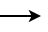
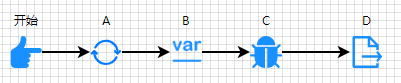
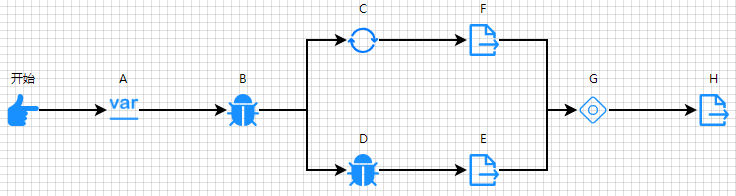
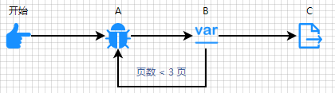

快速入门
认识各个节点
开始节点
- 仅仅是爬虫的起点,所有流程图必须有该节点。
爬取节点
该节点用于请求HTTP/HTTPS页面或接口
- 请求方法：GET、POST、PUT、DELETE等方法
- <font color="blue">URL</font>: 请求地址
- <font color="blue">延迟时间</font>：单位是毫秒，意思是爬取之前延迟一段时间在执行抓取
- <font color="blue">超时时间</font>：网络请求的超时时间，单位也是毫秒
- <font color="blue">代理</font>：请求时设置的代理，格式为
host:port如192.168.1.26:8888 - 编码格式：用来设置页面的编码格式默认为UTF-8，当解析出现乱码时，可以修改此值
- 跟随重定向：默认是跟随30x重定向，当不需要此功能时，可以取消勾选
- TLS证书验证：此项默认是勾选的，当出现证书一类的异常可以取消勾选此项尝试
- 自动管理Cookie：请求时自动设置Cookie（自己手动设置的与之前请求的Cookie都会设置进去）
- 自动去重：勾选时会对url进行去重处理,如果重复则跳过。
- 重试次数：当请求发生异常或状态码不为200时会进行重试
- 重试间隔：重试期间的间隔时间(单位为毫秒)
- 参数：用来设置GET、POST等方法的参数设置
- <font color="blue">参数名</font>：参数key值
- <font color="blue">参数值</font>：参数value值
- 参数描述：仅仅用来描述该项参数（相当于备注/注释）无实际意义
- Cookie：用来设置请求Cookie
- <font color="blue">Cookie名</font>：Cookie key值
- <font color="blue">Cookie值</font>：Cookie value值
- 描述：仅仅用来描述该项Cookie（相当于备注/注释）无实际意义
- Header：用来设置请求头
- <font color="blue">Header名</font>：Header key值
- <font color="blue">Header值</font>：Header value值
- 描述：仅仅用来描述该项Header（相当于备注/注释）无实际意义
- Body：请求类型（默认是none）
- form-data（Body项设置为form-data）
- <font color="blue">参数名</font>：请求<font color="blue">参数名</font>
- <font color="blue">参数值</font>：请求<font color="blue">参数值</font>
- 参数类型：text/file
- <font color="blue">文件名</font>：上传二进制数据时需要填的文件名
- raw（Body项设置为raw）
- Content-Type：text/plain,application/json
- <font color="blue">内容</font>：请求体内容（String类型）
定义变量
该节点用于定义变量之后，可以与表达式配套使用，实现动态设置各项参数(如动态请求分页地址)
- <font color="blue">变量名</font>：变量的名字，当变量名重复时，会覆盖前一个变量
- <font color="blue">变量值</font>：变量的值，可以是常量，可以是表达式
输出节点
该节点主要用于调试,测试时会把输出打印到页面中，另外也可以用来自动保存到数据库或文件
- 输出到数据库：勾选时需要填写数据源、表名称，且
<font color="blue">输出项</font>要与列名对应 - 输出到CSV文件：勾选时需要填写CSV<font color="blue">文件路径</font>，
<font color="blue">输出项</font>会作为表头 - 输出全部参数：一般用来调试，可以输出所有变量到界面上
- <font color="blue">输出项</font>：输出项的名字
- <font color="blue">输出值</font>：输出的值，可以是常量，可以是表达式
循环节点
- <font color="blue">次数或集合</font>：当此项有值(值为集合或数字)时，后续节点（包括本节点）会循环执行
- 循环变量：默认为
item,与for(Object item : collections)中的item意义相同 - 循环下标：当循环时，会产生下标（从0开始）以该值存入变量中，与
for(int i =0; i < array.length;i++)中的i意义相同 - 开始位置：从该位置开始循环(从0开始)
- 结束位置：到该位置结束(-1为最后一项,-2为倒数第二项,以此类推)
等待结束
该节点会等待到该节点之前所有节点执行完毕时才会执行下一级节点。
执行SQL
主要用于与数据库交互（查询/修改/插入/删除等等）
- 数据源：需要选择配置好的数据源
- 语句类型：select/selectInt/selectOne/insert/insertofPk/update/delete
- <font color="blue">SQL</font>： 要执行SQL语句，需要动态注入的参数用
##包裹起来如：#${item[index].id}#
注释
仅仅是注释,毫无其它作用
子流程
主要用于调用其他流程
- 子流程：选择要调用的流程即可
执行函数
在每个输入框中填写一个函数调用，例如 ${thread.sleep(1000L)} 会等待 1 秒。多条调用按从上到下的顺序执行。
要在后续节点使用函数返回值，在「定义变量」节点中填写变量名和函数表达式。具体写法和脚本日志示例见自定义函数。
连接线

用来流转至下一个节点
- 线粗细：用来调整线的粗细
- 线样式：用来调整线的样式
- 线颜色：用来调整线的颜色
- 流转特性：目前可勾选的是传递变量（默认勾选）
- <font color="blue">流转条件</font>：当表达式返回
true时将流向下一个节点，否则不流转,不填时默认流转
通用参数
- 节点名称：用来显示节点名称，可以用来区分各个节点用途
- <font color="blue">循环次数</font>：当此项有值时，后续节点（包括本节点）会循环执行
- 循环变量：当循环时，会产生下标（从0开始）以该值存入变量中，与
for(int i =0; i < array.length;i++)中的i意义相同
变量的作用域
变量（包括循环变量）一经定义就会向下一直传递（包括本节点）直至整个流程结束，当中间出现重复定义时，会覆盖原来的变量值
流程的执行过程
简单一句话概括就是流程会按照箭头的方向一直流转下去，个别节点会打断流转（箭头）或重复流转（循环）。 下面举几个例子来说明一下。
-
流程实例一

很容易就能看出流程执行过程是：A->B->C->D，但由于A节点是循环，假设A节点循环次数是3，那么此时执行过程会变成A,A,A->B,B,B->C,C,C->D,D,D（3个A一起执行,但是顺序不固定，每执行完一个就会直接流向下一个节点，而不是等3个A都结束），当D,D,D都执行完毕时，由于没有流向下一个节点，此时整个流程结束。
由于B,C,D节点中也可以设置循环，假设C节点也设置了循环，其循环次数是2次，那么此时整个流程的执行过程是A,A,A->B,B,B->C,C,C,C,C,C->D,D,D,D,D,D(即形成了嵌套循环)
-
流程实例二

- 先说运行顺序：A->B->(C->F),(D->E)->G->H
- 先执行A节点
- A节点执行完毕时，执行B节点
- B节点执行完毕时，同时执行C、D节点
- C节点执行完毕时，执行F节点
- D节点执行完毕时，执行E节点
- E、F节点都执行完毕时，执行G节点（G节点是等待结束节点，所以这里会等E、F都结束，否则无论E、F哪个节点执行完毕，都会执行G节点）
- G节点执行完毕时，执行H节点
- H节点执行完毕时，流程结束
由于C节点是循环节点，假设C节点循环次数是3次，则上方从C节点开始则变成C,C,C->F,F,F->G->H
-
流程实例三

- 运行顺序：A->B->A,C->B->C
- 先执行A节点
- A节点执行时，执行B节点
- B节点执行完毕时，执行A、C节点
- 共计执行2次A，2次B，2次C。
这里会形成递归，即A<->B，但是形成这种情况时，往往都需要加条件进行限制，即上图中的页数 < 3